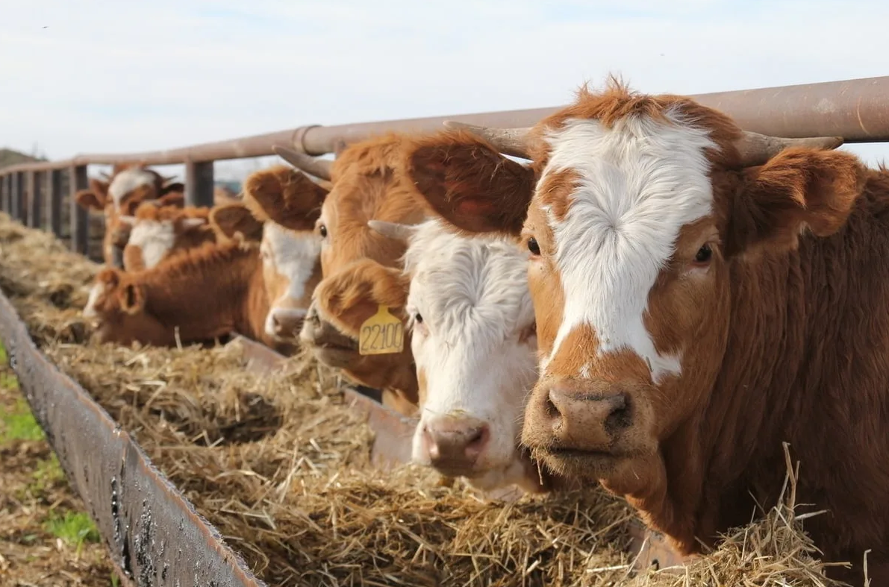
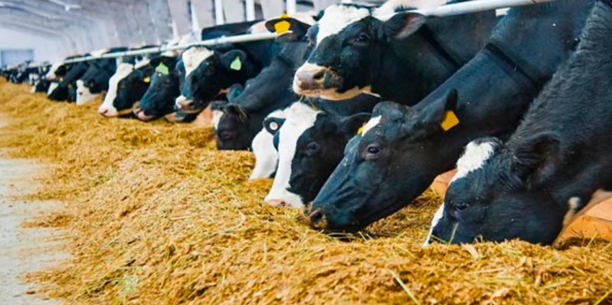

Разведение крупного рогатого скота выгодно не только для больших ферм, но и для малых подсобных
хозяйств.
Одна ухоженная корова ежедневно дает до 20 литров молока летом и около 12 литров молока зимой. Такое
количество полностью перекрывает молочные потребности любой российской семьи. Даже обеспеченные
россияне все
чаще заводят мини-фермы с наемным трудом, чтобы круглогодично обеспечивать свои семьи натуральным
молоком,
маслом, сметаной, творогом и мясом. Однако взамен на свою полезность сельскохозяйственные животные
требуют к
себе особое внимание, а также знание правил их содержания. Крупнорогатый скот (КРС) имеет более
высокие
требования по уходу, чем свиньи или домашние птицы.

Уход и гигиена
Правильный уход за крупнорогатым скотом включает регулярный осмотр здоровья, соблюдение гигиенических норм и
обеспечение комфортных условий содержания.
КРС не способен самоочищаться, как кошки или собаки, но при этом коровы тоже очень любят чистоту. Мыть этих
животных необходимо каждый день с помощью ведра, слегка теплой воды и мягкой тряпки. Наибольшее внимание
следует уделять чистоте вымени и пространству около него. Попадание в ведро с молоком грязи и пыли может
испортить весь надой. При использовании аппаратов автоматического доения, нельзя доильные стаканы держать на
вымени более двух часов. Иначе корове гарантирован мастит или схожие болезни.
При правильном содержании недопустимо проводить любые гигиенические процедуры с животным во время его приема
пищи. Зимой вода для обмывания должна быть теплее, и коровник перед процедурой должен быть прогрет.
Часто уход проводят с помощью обмывания КРС напором холодной воды из шланга. А потом удивляются, как животное
смогло застудить вымя на июльской жаре. Та же ошибка получается и при постоянном купании стада в холодной
реке. Необходимо помнить, что корова — не бегемот, и водоем не является её естественной средой пребывания.
Долгое пребывание в воде всегда чревато заболеванием животного.
Кожа, шкура и копыта КРС тоже нуждаются в уходе. Для качественной очистки тела коровы, животноводы применяют
ручные пылесосы, щетки и скребки. Чистка копыт производится на специальных приспособлениях, фиксирующих ногу
животного. Наросты на копытах срезают специальными щипцами или ножом.
Очистку ног и шкуры необходимо производить не позже, чем за час до кормления или доения. Животному после
подобных процедур требуется время, чтобы отойти от стресса.
Питание

Коровы, телята и быки за день потребляют большое количество корма. Такие объемы нередко пугают
неопытных
фермеров, и они отказываются от разведения КРС. На деле же каждая дойная корова с лихвой окупает
свое
содержание, даже если сбывать её натуральное молоко по ценам, ниже магазинных суррогатов. Ведь
период доения
после отела длится почти 300 дней. Тем не менее, во время выделения молока (лактации) здоровый
рацион
взрослой особи весом в 500 кг имеет следующую суточную норму:
Влажная трава (сенаж) —20 кг.
Сухое сено — 2 кг.
Дробленные овощи (кормовая свекла, морковь, картофель) — 5 кг.
Фуражный концентрат (измельченные зерна пшеницы, овса, ячменя) — 5 кг.
Пищевая соль — 3 столовых ложки (60 грамм).
Мел или минеральные добавки — до 50 гр. (телята до 1 года) и до 100 гр. (взрослые особи).
Кормление травой
Трава и другие корма составляют большую часть рациона на травяном корме. Ведутся споры о том, следует ли
выращивать крупный рогатый скот на рационах, состоящих в основном из пастбищ (травы), или на
концентрированном рационе из зерна, сои и других добавок. Проблема часто осложняется политическими
интересами и путаницей между такими ярлыками, как "свободный выгул", "органический" и "натуральный". Крупный
рогатый скот, называемый кукурузным, зерновым или полуфабрикатом из кукурузы, обычно выращивают на кукурузе,
сое и других видах кормов. Высококалорийная диета увеличивает надои молока, измеряемые в фунтах или
килограммах молока на голову в день.
Ячмень
В Западной Канаде мясной скот обычно переводят на рацион на основе ячменя.
Лен
В некоторых частях мира лен (или льняное семя) используется для производства льняного масла, и это вещество
смешивают с другими твердыми кормами для крупного рогатого скота в качестве белковой добавки. Его можно
добавлять только в небольших количествах из-за высокого содержания жира, что вредно для жвачных. Одно
исследование показало, что скармливание семян льна может увеличить содержание омега-3 и улучшить мраморность
в готовой говядине, в то время как другое не выявило различий.
Другое
Существует множество альтернативных кормов. К ним относятся люцерна и другие корма, силос различных растений,
растительные остатки, такие как ростки гороха, солома или шелуха семян, остатки другого производства, такие
как жмых из масличных культур, меласса, сыворотка, и такие культуры, как свекла или сорго.
Суточный рацион необходимо распределять на 2-3 кормления. Причем, время приема пищи должно быть строго
зафиксировано. Коровам безразлично, когда их в первый раз будут кормить, в 6 утра или в 13 часов. Они
приспособят свои биологические часы под любой график. Но вот нарушение этого графика может пагубно сказаться
на здоровье животного. Не получив в положенное время еду, желудок коровы получит неприятную нагрузку от
заранее выделенных ферментов и сока.
Постоянный сбой ритма кормления гарантирует появление целого ряда коровьих болезней. Также стоит добавить,
что одна корова во время каждого кормления выпивает около 30 литров воды. Причем вода не должна быть грязной
или затхлой. Животное в этом плане крайне привередливо. От безысходности корова конечно выпьет неочищенную
жижу, но ответит она на это ухудшением самочувствия и снижением надоев.
Выгул
Попадание коровы в незнакомую обстановку — это всегда стресс для животного. Оно инстинктивно стремится
убежать из непривычных условий. Пока корова не адаптируется к новому стаду и к хозяину, не стоит её снимать
с привязи и выпускать за пределы коровника. Когда же пугливость пройдет и поведение животного станет
спокойным, можно начинать выводить её на короткие прогулки. При этом обязательно нужно использовать ошейник
для КРС и специальный поводок (стропы). В случае непослушания корову-новичка ни в коем случае нельзя бить
или наказывать. Принуждать животное к своей воле хозяин должен только после привыкания коровы к новому месту
и возникновения у неё доверия к тому, кто её кормит.
Молодую корову также требуется приучать к пастбищу постепенно. У молодняка, выросшего в стойле с матерью,
стадный инстинкт слаб. Молодое животное, попадая в открытое пространство, теряется, и, не видя матери, может
броситься на её поиски вдали от стада. Время контролируемого выпаса молодняка необходимо за неделю довести с
2 часов до 15. Когда животное привыкнет к коллективному выпасу, его уже можно выпускать без привязи. При
наличии больших групп молодняка пастухи нередко привязывают их стропами друг к другу. Это несет определенные
неудобства (стропы могут запутаться), но иногда это единственный способ уследить за пугливым молодняком.
Контакты
Если у вас есть вопросы, свяжитесь с нами по адресу: 2005fyodor@mail.ru